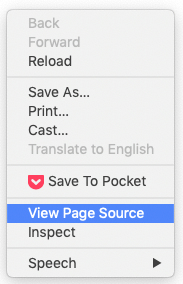
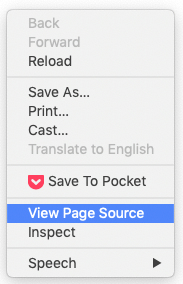
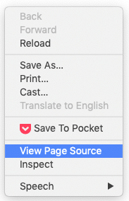

Zdrojový kód stránky
 

Když umíráš a proběhne ti celý život před očima, přijde Mirka Spáčilová a dá tomu 60 %
Opravdu hodnotí Mirka Spáčilová všechny filmy 60 %? Jde to nějak ověřit?
Michal Bláha stáhnul z iDnes celkem 1333 článků Mirky Spáčilové s hodnocením filmů a vytvořil tabulku filmů a jejich hodnocení. Šedesát procent dostal každý třetí film :-)
https://www.michalblaha.cz/2017/10/filmova-kriticka-mirka-spacilova-v-cislech/
Co myslíte, můžeme věřit 80% slevám, které většina českých e-shopů nabízí během akcí typu Black Friday?
V roce 2017 začali v Apify měsíc před Black Friday denně monitorovat ceny všech produktů v největších českých e-shopech. Během Black Friday navíc 4x denně monitorovali ceny produktů v kategorii Black Friday.
Co zjistili? Průměrná uváděná sleva byla kolem 30 %, reálná kolem 20. Stačí zvýšit „původní cenu“ před slevou. Našly se i případy, kdy jste si mohli koupit zboží sice dráž, ale zato s větší slevou.
Projekt se v dalších letech rozrostl, takže dnes si můžeme stáhnout rozšíření do prohlížeče a přesvědčit se sami.
https://medium.com/@jakubbalada/black-friday-2019-s-hl%C3%ADda%C4%8Dem-shop%C5%AF-9a3ddd352a8c
<img><h2> a </h2>p.error {
color: red;
}#%pip install lxml beautifulsoup4 selenium
Pokud nám stačí stáhnout tabulky z webu, můžeme použít knihovnu Pandas:
import pandas as pd
Převedeme tabulky ze stránky Wikipedie Seznam států světa podle spotřeby alkoholu do dataframů pomocí funce read_html():
tables = pd.read_html('https://cs.wikipedia.org/wiki/Seznam_st%C3%A1t%C5%AF_sv%C4%9Bta_podle_spot%C5%99eby_alkoholu')
Výsledkem je seznam dataframů:
type(tables)
len(tables)
tables[0].head()
Podle WHO je Česko první! Aspoň v průměrné spotřebě alkoholu v letech 2003-2005.
tables[1].head()
Podle OECD to vypadá trochu jinak 🧐
Varování: Svět není ideální (proto se v něm taky tolik pije) a ne vždy se podaří tabulky pomocí read_html() získat. Příkaz nemusí tabulku vůbec „vidět“, nebo si nedokáže poradit s její strukturou.
Získejte tabulku aktuálních ekonomických údajů ze stránek Českého statistického úřadu, https://www.czso.cz/csu/czso/aktualniinformace.
Nápověda: Pokud uvidíš v dataframu ošklivé znaky, zkus specifikovat encoding='utf-8'
Pokud data, která hledáme, nejsou na webu ve formě tabulky, musíme přikročit k „drastičtějším“ nástrojům :-)
Knihovna BeautifulSoup se používá k získávání dat z HTML a XML souborů. Pracuje s různými parsery, které analyzují HTML soubory, a umožnuje vybrat požadované HTML elementy a pracovat s nimi.
Pod čarou: Kdybys měl/a větší projekt a potřeboval/a projít třeba několik desítek e-shopů, podívej se na knihovnu Scrapy, která je pro podobné úkoly vhodnější.
from bs4 import BeautifulSoup
Nejprve si načteme vzorový html dokument ze souboru:
with open("static/html_doc.html", "r") as f:
html_doc = f.read()
Vytvoříme objekt typu BeautifulSoup. První argument jsou HTML data, druhý slouží k specifikaci parseru.
soup = BeautifulSoup(html_doc, 'html.parser')
Pomocí metody prettify() můžeme vytisknout hezky zformátované html:
#print(soup.prettify())
Po objektu typu BeautifulSoup se můžeme pohybovat pomocí tagů.
První element typu title:
soup.title
První element typu h1:
soup.h1
Jméno elementu typu h1:
soup.h1.name
Jméno nadřazeného elementu (atributy parent a name):
soup.h1.parent.name
Data uvnitř elementu h1 (atribut string)
soup.h1.string
První element typu h2:
soup.h2
Id elementu h2:
soup.h2['id']
Můžeme najít i všechny tagy daného typu, např find_all('a') najde všechny odkazy:
links = soup.find_all('a')
links
Výsledky hledání můžeme procházet:
links[0]['href']
links[0].text
Nemusíme hledat jen podle jména tagu, ale i podle jejich atributů:
soup.find(id="pydata-prague")
Pokud hledáme podle třídy, memůžeme použít soup.find(class="pydata"), protože class je v Pythonu klíčové slovo. Musíme použít class_
soup.find(class_="pydata")
class můžeme taky napsat jako klíč v parametru attrs:
soup.find(attrs={'class':'pydata'})
Vyberte odstavec s id description.
Vyberte všechny odkazy s třídou pydata
Knihovna requests je určená pro HTTP dotazy. V našem případě ji budeme používat pro získání textu webové stránky.
HTTP požadavky lze vytvářet i pomocí standardní knihovny Pythonu, ale requests mají mnohem lidštější rozhraní.
import requests
r = requests.get('https://pydata.cz/')
Můžeme zkontrolovat návratový stav:
r.status_code
Stavové kódy se dělí do 5 skupin:
Metoda text ukáže zdrojový kód stránky:
#print(r.text)
S knihovnou BeautifulSoup můžeme vyhledávat CSS selektory pomocí funkcí select (ukáže všechny prvky) a select_one (najde první prvek).
Otevřeme si html dokument s programem kin. Je stažený z https://dokina.tiscali.cz/program-kin, ale protože by se mohlo stát, že dnes na programu nic není, použijeme radši staženou verzi. Pokud na stránkách něco je, můžeš samozřejmě použít requests.
with open("static/kina.html", "r") as f:
html_doc = f.read()
soup = BeautifulSoup(html_doc)
Zkusíme najít všechny tagu s třídou title a několik z nich si vypíšeme:
(Kvůli přehlednosti nevypisujeme úplně všechny)
titles = soup.select('.title')
titles[:6]
Najdeme všechny tagy typu <h3 class="title mb-0"> a podíváme se na první z nich:
mb0_titles = soup.select('h3.title.mb-0')
mb0_titles[0]
Najdeme všechny tagy s třídou title uvnitř tagů s třídou movie-item
soup.select('.movie-item .title ')
Než začneme procházet stránku pomocí Pythonu, je dobré podívat se na její strukturu přímo v prohlížeči.



Poznámka: Pokud v záložce Network nic nevidíš, zkus obnovit stránku.
Extrakce dat o 20 nejlepších filmech podle ČSFD
Chceme vytvořit tabulku s následujícími sloupci:
Na scraping není univerzální návod. Obvykle metodou pokus-omyl zkoušíme, co bude fungovat. Pak přijde aktualizace stránek a můžeme začít znovu...
url = 'https://www.csfd.cz/zebricky/nejlepsi-filmy/'
# stránka odmítá GET requesty bez identifikace User-Agenta:
headers = {'User-Agent': 'Mozilla/5.0 (X11; Linux x86_64) AppleWebKit/537.36 (KHTML, like Gecko) Chrome/79.0.3945.117 Safari/537.36'}
r = requests.get(url, headers=headers)
soup = BeautifulSoup(r.text, 'html.parser')
Podívej se do zdrojového kódu stránky. Jaké prvky budeme na stránce hledat? A kde najdeme informace o režisérovi?
Podíváme se, jak vypadají prvky třídy film:
soup.select('.film')[0]
Abychom získali další informace o filmech, musíme se dostat na stránku filmu. K tomu budeme potřebovat odkazy:
film_odkazy = soup.select('.film a')
film_odkazy[0]
odkazy = ['https://www.csfd.cz' + film['href'] for film in film_odkazy]
odkazy[0]
Rovnou si uložíme i názvy filmů:
nazvy = [film.text for film in film_odkazy]
nazvy[0]
Průměrné hodnocení najdeme v prvcích s třídou average:
soup.select('.average')[0]
hodnoceni = [aver.text for aver in soup.select('.average')]
hodnoceni[0]
Nejdřív si zkusíme najít informace o prvním filmu:
r = requests.get(odkazy[0], headers=headers)
film_soup = BeautifulSoup(r.text, 'html.parser')
film_soup.select_one('.origin').text
film_soup.find('span', {'itemprop': 'director'})
film_soup.find('span', {'itemprop': 'director'}).a.text
Hurá! Funguje to. Můžeme to udělat se všemi filmy.
from time import sleep
import re
Poznámka pod čarou: re je modul standardní knihovny pro práci s řetězci pomocí regulárních výrazů. V následujícím kódu ji použijeme pro rozdělení řetězce podle dvou různých znaků.
Potřebujeme vyřešit případy typu 166 min (Director's cut: 175 min, Alternativní: 152 min), proto dělíme text podle znaků "," a "("
zeme = []
roky = []
delky = []
reziseri = []
for odkaz in odkazy:
r = requests.get(odkaz, headers=headers)
film_soup = BeautifulSoup(r.text, 'html.parser')
txt = film_soup.select_one('.origin').text
puvod, rok, cas, *zbytek = re.split(',|\(', txt)
reziser = film_soup.find('span', {'itemprop': 'director'}).a.text
zeme.append(puvod)
roky.append(rok)
delky.append(cas)
reziseri.append(reziser)
sleep(1) # chováme se lidsky :-)
filmy_df = pd.DataFrame(zip(nazvy, zeme, roky, reziseri, delky, hodnoceni),
columns=['Název',
'Původ',
'Rok',
'Režie',
'Délka',
'ČSFD'])
filmy_df.head()
Pokud webová stránka používá JavaScript k generování obsahu, máme dvě možnosti:
Výsledky závodu Big's Backyard Ultra, https://my.raceresult.com/139372/#0_2C3B48
r = requests.get('https://my.raceresult.com/139372/#0_2C3B48')
Zkusíme najít v textu stránky slovo Gavin.
r.text.find("Gavin")
Nic. Kde se stala chyba? Vytiskneme si zdrojový kód stránky... a tabulka nikde!
#print(r.text)
Pokud nám jde o data jen z jedné webové stránky, můžeme pomocí nástrojů pro vývojáře zjistit, co javascript na stránce dělá. Zajímá nás, kde bere stránka data.
Otevřeme si nástroje pro vývojáře a rozklikneme záložku Network. Pokud na ní nic není, stránku refreshujeme. Typicky nás zajímají dotazy typu XMLHttpRequest (XHR), které stránce umožňují získávat data z nějaké URL.
V našem případě vidíme dva dotazy typu XHR, podíváme se na ně blíž, abychom zjistili, který z nich obsahuje hledaná data. Zkopírujeme si adresu odkazu.
r = requests.get('https://my2.raceresult.com/RRPublish/data/list.php?eventid=139372&key=3a52cf488ad3dfe5c994f6b203e7c2e8&listname=Result+Lists%7CLap+Details&page=results&contest=0&r=all&l=0')
#r.text
#r.json()['data']
r.json()['data']['#1_1///Gavin Woody///40Laps']
Selenium je knihovna určená na automatizaci testování webových aplikací. Umožňuje spustit a ovládat prohlížeč, takže s ní můžete dělat prakticky všechno, co obvykle děláte na webu. Třeba automaticky vyplňovat formuláře nebo stahovat data.
from selenium import webdriver
from selenium.webdriver.firefox.options import Options
#from selenium.webdriver.chrome.options import Options
from selenium.webdriver.common.by import By
from selenium.webdriver.support.ui import WebDriverWait
from selenium.webdriver.support import expected_conditions as EC
from selenium.common.exceptions import TimeoutException
options = Options()
options.headless = True
Nemáš-li chromedriver nebo geckodriver (pro Firefox), stáhneš je tady:
driver = webdriver.Firefox(options=options)
#driver = webdriver.Chrome(options=options)
driver.get('https://my3.raceresult.com/139372/#0_2C3B48')
Stáhneme tabulku s třídou MainTable:
try: # čekáme 5 s, jestli se tabulka natáhne
table = WebDriverWait(driver, 5).until(EC.presence_of_element_located((By.CLASS_NAME, 'MainTable')))
except TimeoutException:
print("Time out!")
table
txt = table.text
print(txt[:1000])
driver.close()
driver.quit()
Naučili jsme se jak získat data i bez API nebo CSV soubourů. Nesmíme u toho ale zapomínat na dodržování zákonů a etiky. Webscraping zkoušej vždy až jako poslední možnost, stačí sebemenší změna na stránce a tvůj postup přestane fungovat.